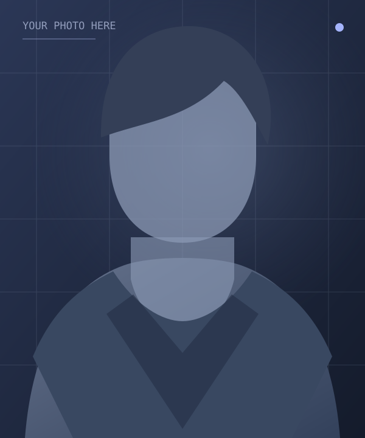

Featured project
Task Nest
Vendor & customer marketplace
A two-sided service marketplace with role-based onboarding, authentication, service listings, and booking workflows.
View project & demoHello, I'm
Computer Vision & Applied AI
I build full-stack applications and computer vision systems, with a focus on clean data, reliable workflows, and well-tested software.

B.S. Computer Science · Class of 2026
Engineering portfolio
Seven applied projects spanning full-stack engineering, computer vision, model-serving concepts, and technical document search.
Showing all 7 projects
Vendor & customer marketplace
A two-sided service marketplace with role-based onboarding, authentication, service listings, and booking workflows.
View project & demoDetection, preprocessing & OCR
A Python vision pipeline that follows vehicles through traffic footage and reads license plates from detected regions.
View project & demoRelational databases & analytical data
Query performance work using execution plans, JOIN refactoring, and targeted indexes in MySQL and PostgreSQL.
View project & demoDetection & identity verification
An object-tracking pipeline that combines bounding-box detections with spatial and feature matching across video frames.
View project & demoCCTV vehicle tracking & direction-aware counting
A traffic-camera analytics case study exploring vehicle identity continuity, crossing events, and directional flow with interactive simulated CCTV observations.
View project & demoLeaf inspection & containerized inference API
An agricultural vision case study centered on leaf disease detection and a reliable image-inference contract with validation, confidence filtering, and structured detection results.
View project & demoMaintenance knowledge search with citations
A technical-operations document assistant concept with ranked maintenance manual excerpts, page-level citations, searchable evidence, and no-evidence handling.
View project & demoTechnical toolkit
Practical skills, applied across
academic and independent projects.
TypeScript · Python · Supabase
Authentication flows, application structure, and data structures.PostgreSQL · MySQL · SQL · Excel
Query optimization, relational schemas, data cleaning, and ETL fundamentals.OpenCV · YOLO · Tesseract OCR
Object detection, tracking, image preprocessing, and dataset annotation.Manual QA · Jira · Agile · Scrum
Functional and usability testing, edge cases, defect reports, and client communication.Hands-on experience
Independent work in data,
delivery, and technical support.
Prepared structured datasets for computer vision and language projects, with a focus on consistency and accuracy.
Delivered structured data solutions for small business clients, from requirements through revisions and handover.
Provided practical technical support while explaining problems and solutions to non-technical users.
A little about me
I'm a software engineer and Computer Science graduate from Balochistan University of Engineering and Technology. My work connects application development, computer vision, and databases—from building a service marketplace to tracking objects across video frames.
I enjoy working through the whole problem: understanding requirements, structuring the data, implementing the solution, and testing how it behaves. Freelance work has also taught me to communicate clearly and take ownership of delivery.
English · Urdu · Brahvi · Balochi
Coursera Agile Foundations & Scrum certifications; Atlassian Jira workflow management.
NAVTTC Network Administrator, 3 months (completed); Corvit Karachi Cloud Tech Essentials, 3 months, and intensive IT bootcamp, 6 days.
AssemblyAI Voice Agent Hackathon participant certificate.
Overview & Application Scenarios of Edge Computing; Robotics course certification.
DigiSkills WordPress & On-Page SEO training. Practical experience with Google Analytics and Search Console.
Duolingo English Test: 140/160, taken in 2021.
Get in touch
Have a software project or an engineering opportunity in mind?
I'd be glad to hear about it.